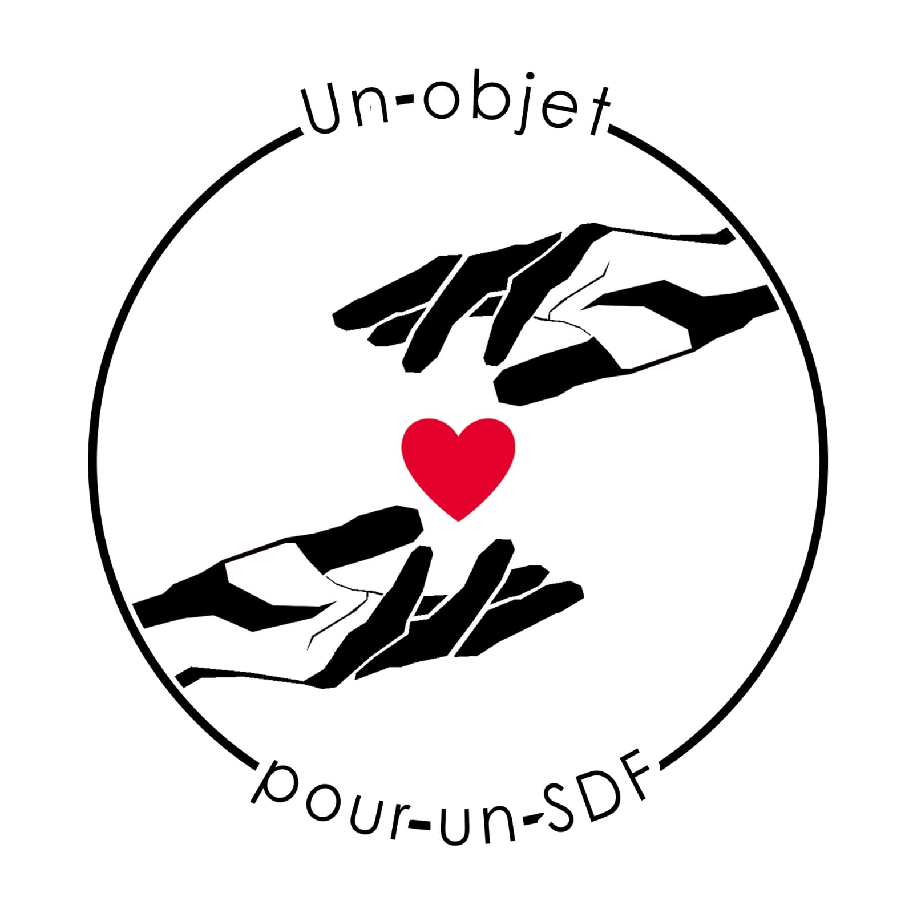

L'idée est de lutter contre la précarité matérielle et la solitude. L’idée nous est venue lorsque nous avons pris conscience qu’un objet anodin pour nous, pouvait être vital aux plus démunis. Nous avons tous des affaires dont nous ne servons pas et qui sont en fait un immense gaspillage. Sur cette base, nous avons cherché à relier ces affaires inutilisées avec des personnes dans le besoin. Nous avons donc pensé à créer un réseau de solidarité totalement bénévole, principalement basé sur les réseaux sociaux pour assister les sans-abris.
 J'agis !